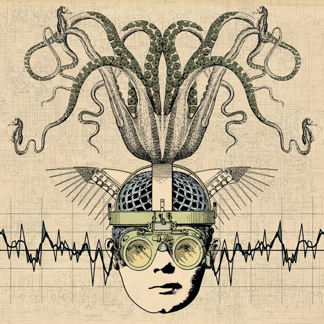
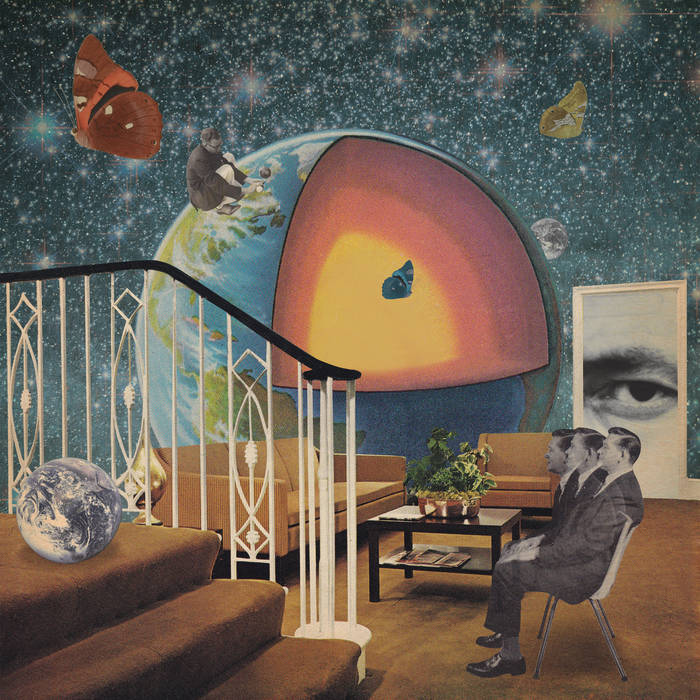
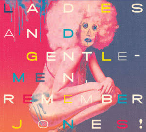
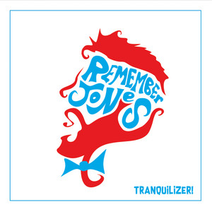
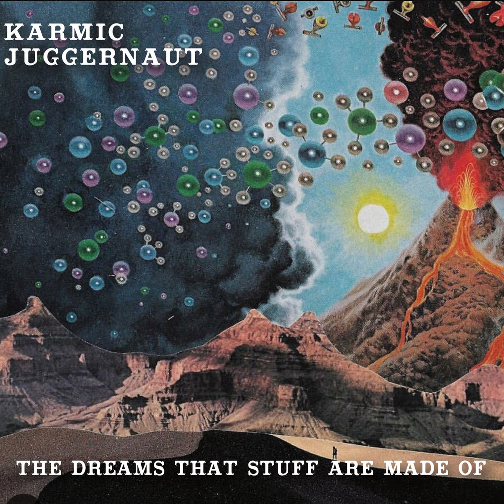
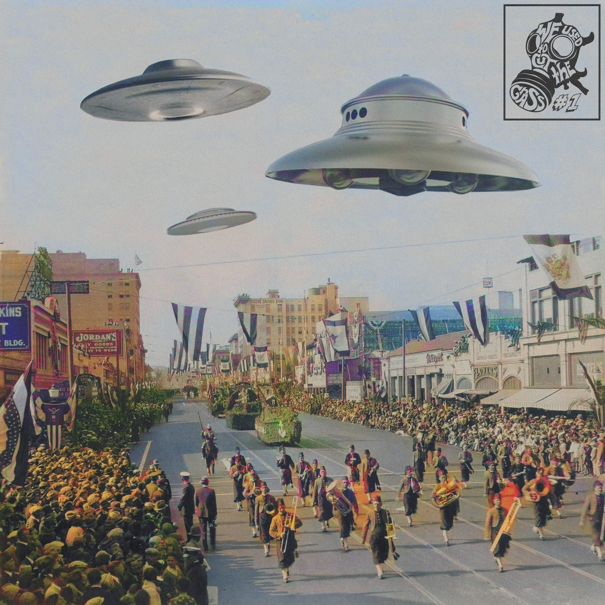
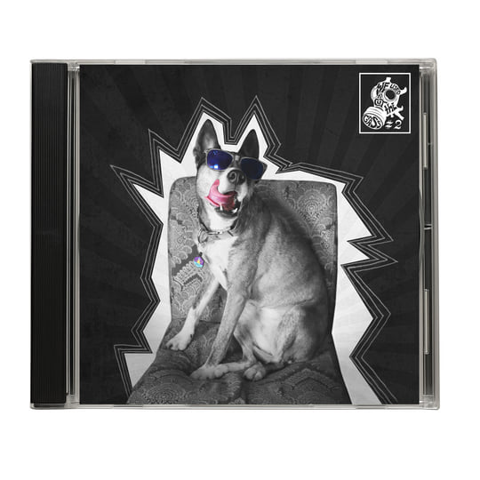
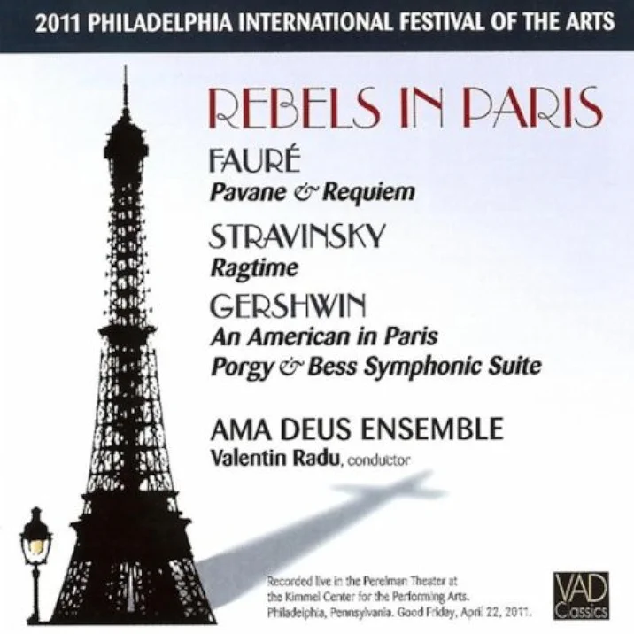

90+
Faculty leadership through change
As HACC’s Interim Chair of Communications, Humanities, and Arts, I worked with more than 90 faculty across five campuses and online during unionization and a presidential transition.
Academic leader, arts administrator, and musician.
I build programs, partnerships, and experiences that connect creative practice with meaningful professional opportunity.
Read full bioLeadership
I have built and led arts programs where creative practice, faculty work, and professional opportunity meet. That record includes launching a music-industry major that grew 525% in five years, founding Reading Samba School, leading more than 90 faculty through institutional change, and building applied learning with working professionals.
90+
As HACC’s Interim Chair of Communications, Humanities, and Arts, I worked with more than 90 faculty across five campuses and online during unionization and a presidential transition.
525%
At Albright College, I launched a music-industry major that grew enrollment by 525% in five years while leading a department of 8 full-time and 12 adjunct faculty.
4,000+
At Albright College, I led career development, experiential learning, student employment, and the 13th Street Educational Partnership. That work created 4,000+ hands-on opportunities, raised positive outcomes from 84% to 91%, and reached a 100% internship-acquisition rate within four years.
2013–19
I founded and led Reading Samba School, bringing musicians, local audiences, and cultural organizations together through public performance and partnership.
WGU
As Associate Dean and Director for Creative Impact Programs in WGU’s School of Business, I lead program strategy, personalized learning design, and hands-on assessment across a business portfolio.
Resource development
I develop proposals, build budgets, and work with partners and grants offices to advance academic, workforce, and community programs.
Grant development lead · 2025
$399,896
Led the research, budget development, and grants-office coordination for a cybersecurity apprenticeship initiative funded through a $399,896 Pennsylvania Department of Labor & Industry award to SCPa Works.
Grant development lead · 2024
$750K
Led the research, budget development, and grant-development work for this four-year USDA NIFA-funded workforce and education initiative for controlled-environment agriculture.
Principal Investigator · 2025
$614,917
Served as Principal Investigator for this U.S. Department of Education Strengthening Institutions Program award to Harrisburg University.
Design and product leadership
Wireframe references to deployed learning systems. Proprietary data and client branding are removed; the core workflows remain.
Product leadership · deployed platform
A mobile AI learning platform used by more than 300 organizations. I led product work on training pathways and the learner experience.
Visit Thinking Through AI ↗Product design · deployed system
A wireframe reference to a deployed feedback system that helps learners make a choice, receive guidance, and revise.
View system ↗AI quality review · deployed system
A wireframe reference to a deployed review system for assessing AI-assisted feedback against factual accuracy, source fidelity, teaching value, and clarity.
View system ↗Learning analytics · deployed system
A wireframe reference to a deployed workbench where students receive a test dataset after uploading a wireframe, then decide what to change and why.
View system ↗Product design · deployed system
A wireframe reference to a deployed system that maps xAPI statements from an LRS to program skills and suggests a next step.
View system ↗Scholarship and creative practice
Open an area to view a selected record of compositions, performances, recordings, writing, presentations, and community arts work.

Sound Masses
& Wine Glasses

International
percussion work

Stranger Heads Prevail
Thank You Scientist / percussionistListen on Spotify
Terraformer
Thank You Scientist / percussionistListen on Spotify
Ladies and Gentlemen,
Remember Jones!

Tranquilizer
Remember Jones / percussionist, writer, arrangerListen on Spotify
The Dreams That
Stuff Are Made Of

We Used to Cut
the Grass #1

We Used to Cut
the Grass #2

Rebels
in Paris
Contact